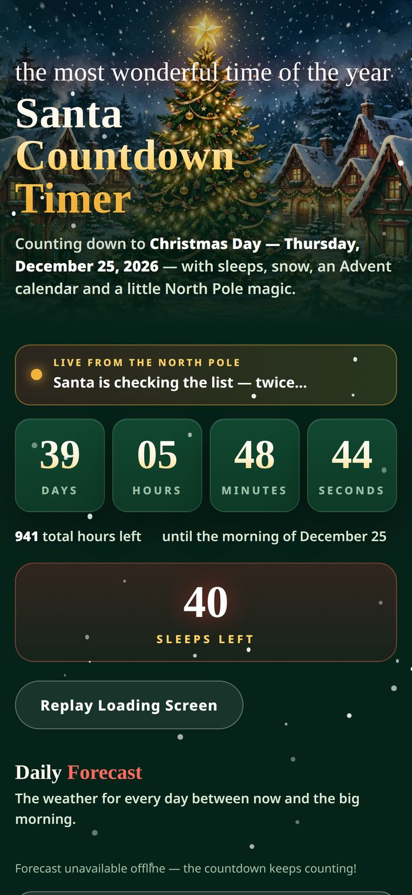
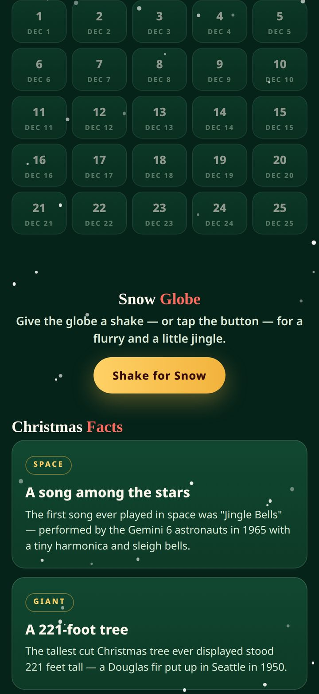
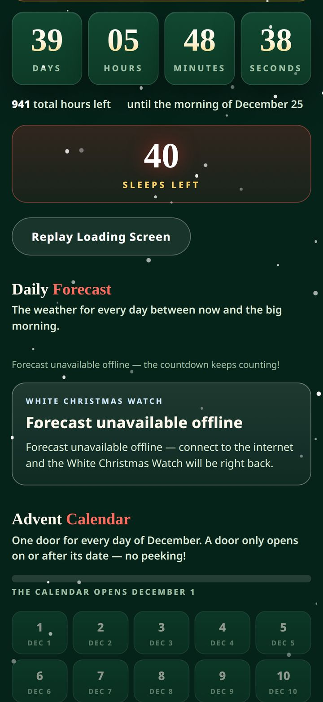

About Santa Countdown Timer
- Live countdown to December 25 — days, hours, minutes, seconds, total hours, and the all-important number: how many SLEEPS are left.
- Advent calendar: 25 doors, one for each day of December, each hiding a joke, a festive fact or a little hand-drawn picture. Can't wait? Peek at tomorrow's door a day early with a short ad.
- Santa status updates all December long — and on Christmas Eve, Santa has left the North Pole.
- Snow globe: shake your phone (or tap the button) for a flurry of snow and a Jingle Bells chime.
- Daily weather forecast and White Christmas Watch — will it snow on Christmas Day? The app watches the December 25 forecast for you. Weather data by Open-Meteo.
- Local Christmas activities: a “LOCAL CHRISTMAS ACTIVITIES HERE” tab listing holiday events near you through December 26.
- Original artwork throughout, and the countdown, calendar and snow globe all work offline.



More apps by Michael Aras
- S.W.I.S.H – Crossword Battle — Multiplayer crossword battle — 5 tiles, 60 seconds a turn.
- SWISH CITY — Endless runner through a golden city, starring Swisher the blue mascot.
- S.W.I.S.H - Crossword ARCADE — The crossword battle in arcade style — cartoon graphics, Rush races and daily challenges.
- GTA6 News — Fan-made countdown to the GTA 6 launch, with a live launch news feed.